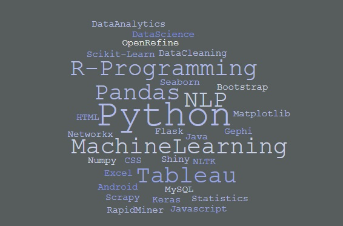

Awaldeep Singh
B.Tech, CSE
Guru Nanak Dev Engineering College, Ludhiana, India
Budding data scientist with 1 year of relevant experience in project works, internships and freelancing. Skilled in statistics, machine learning and data analytics
Education
B.Tech., Computer Science and Engineering, JUL 2015 - Current
Guru Nanak Dev Engineering college, Ludhiana, India.
Cumulative GPA: 8.5 out of 1010th+2, MAR 2014
Bihani Children's Academy, Sri Ganganagar, Rajasthan, India.
Score Percentage: 93.0Major: Mathematics, Physics, Chemistry
10th, MAR 2012
Bihani Children's Academy, Sri Ganganagar, Rajasthan, India.
Score CGPA: 10.0
Work Experience
Data Science Intern, JUL 2018 - NOV 2018
Sabudh Foundation, Mohali
Implemented machine learning algorithms with real life datasets and worked on deep learning based projects.Data Science Research Intern, MAR 2018 - AUG 2017
CSIR-CDRI, Lucknow
Did data collection for a reporters dataset and finding trends in data by doing basic EDA and on tableau etc.Software Developer Intern, JUL 2017 - AUG 2017
Garima software solutions pvt ltd, Hyderabad
Built a Web application using java and Web technologies, about storing all the users related data like academic details, account no, mobile no etc in an encrypted form.Campus Ambassador, JUNE 2018 - NOV 2018
Indian Road Safety Campaign(IIT-Delhi)
Creating awareness amongst people by acting as an medium between organisation and society.
Technical Skills
Project Work
News Recommender, 45 Days
Internship Project
A recommender system that will find the user’s likings and recommend news articles to them based on their interests.I used google’s pre trained word2vec model with gensim for topic modelling.Neural Style transfer, 50 Days
College Major Project
Implemented neural style transfer algorithm. It takes two images, namely, the content image(C) and a style image(S) and generate a new image(G), which combines the content of C with style of S.Neural network from scratch, 20 Days
Self Project
Created my own implementation of neural network using numpy and used on MNIST digits data and speech recognition.
Connect with me @
awalmalhotra@gmail.com
| o LinkedIn | o GitHub |